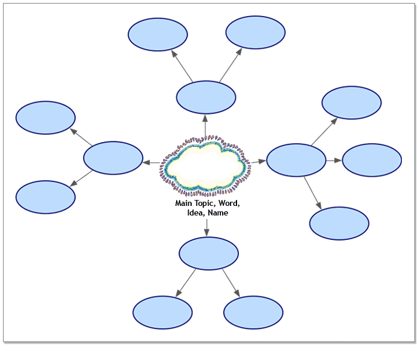

Visual thinking and learning
Visual thinking and learning use graphical ways of working with ideas and presenting information. When you work with visual representations of ideas, you easily see how one idea relates to others. Graphic organizers are valuable visual learning tools that can help you gather and organize details, see patterns and connections, and analyze information and ideas.
Visual learning:
- lets you see and shape your ideas
- connects what you already know with new concepts
- provides structure for thinking, writing, discussing, analyzing, planning and reporting
- focuses your thoughts and ideas, leading to understanding
Organizers For the Writing Process
Sometimes when you're faced with a blank page, it can be hard to get started. This is where graphic organizers can be especially helpful. They provide a way to approach your work and communicate your ideas—from identifying a writing topic to organizing information to mapping out the entire assignment.
Graphic organizers are a good fit for prewriting and drafting activities such as:
- brainstorming for ideas
- focusing thoughts
- gathering content
- grouping ideas
- connecting related concepts
- evaluating information
- creating an outline
- mapping a process
- planning and structuring writing
The illustration below depicts the steps in the writing process, from prewriting to publishing. Sometimes the path to a well-written paper will mean going back a step before you move forward. You may need to return to a previous step to redefine your thesis or do more research, for example. Graphic organizers can help you manage new information and new connections you make, keeping you on track to produce your best work.
The Writing Process
Organizers for Reading comprehension and Studying
An effective reader sets a purpose for reading and chooses strategies to achieve the reading goal. Graphic organizers can help you explore the meaning of a text, make connections, and improve your understanding of the material. You can create a visual representation of content, highlight key ideas, and show patterns and relationships among concepts. Your completed graphic organizers make excellent study guides because they reflect the way you think and learn.
Use graphic organizers for reading comprehension and studying tasks such as:
- capturing and organizing thoughts before, during and after reading
- making connections and constructing meaning from content
- collecting key information from reading
- analyzing and understanding text
- note taking
- creating an outline
- mapping a process
- evaluating sources
- summarizing material
Main Types of Organizers
The following graphic organizers are multiuse organizers because they can be used for a variety of tasks—from prewriting and drafting to reading comprehension and studying.
Idea Map
An idea map starts with a main idea or problem in the middle of the screen. You record ideas associated with the main idea in symbols that extend from the main idea. The symbols connect to the main idea with links. Subtopics or specific details are then added to those ideas. You let the ideas flow and then step back and look at main themes, patterns or possible solutions.
Idea maps are often used to:
- brainstorm ideas
- develop thoughts
- begin a plan
- solve problems
<OR-4190.1>.ext
Concept Map
A concept map is a diagram used to show the connections among concepts, or ideas, beginning with the most general or most important and then working down to more specific detail. Key concepts are connected by links that have descriptive words on them explaining the relationship between the concepts.
A concept map is a good choice to:
- illustrate a scientific or historical concept
- keep track of everything you know about a topic or idea
<OR-4226.1>.ext
Web
A web is a type of map that shows how different bits of information relate to each other. A web has a main idea or core concept at the center with different categories of information connected to it. Ideas, facts and information are connected to the categories to support them.
A web is often used to:
- brainstorm ideas for a plan or written report
- organize notes from reading
<OR-4235.1>.ext
Flowchart
A flowchart shows the order of operations. It is helpful for recording the stages of a process or steps in an experiment.
A flowchart can help you:
- create or understanding a scientific or technical process
- record a step-by-step problem-solving process
- show the workflow for a project
<OR-4228.1>.ext
Mind Map
A mind map starts with a central idea or image surrounded by connected branches of associated topics or ideas. Subtopics are added to the mind map flowing outward from the central idea. Mind map branches contain supporting ideas, or topics with higher-level topics closest to the central idea. Mind mapping lets you organize and recall information while allowing for easy editing.
A mind map can be used to:
- brainstorm ideas
- take notes
- plan a task
<OR-4401.1>.ext
Outline
An outline isn’t a “graphic” organizer, but it is an organizer, nonetheless. An outline helps you organize your work by providing a framework for your ideas and by letting you arrange the flow of information, which can be very useful for planning and structuring your writing. An outline can be very simple or can be used to organize very complex material.
An outline can be used to:
- draft an essay, report or speech
- create a study plan
- understand the organization of reading material such as a textbook
<OR-4229.1>.ext
Timeline
A timeline lists events or actions in the order they happen.
Use a timeline to:
- arrange details or facts in time order sequence for writing
- keep track of dates and the order of events from reading or lecture notes
<6421>.ext <OR-4233.1>.ext
Venn Diagram
A Venn diagram is used to show similarities and differences between two ideas or concepts. The shared characteristics go into the overlapping area to show what the two ideas or concepts have in common.
A Venn diagram is used to:
- organize and analyze information
- compare and contrast topics, events, characters, etc.
<6419>.ext <OR-4234.1>.ext
Storyboard
A storyboard is a visual way to organize projects. A storyboard helps you plan what you're going to say and show and figure out which ideas belong at the beginning, middle, and end. In a storyboard, each symbol can represent a different slide, screen, or page.
A storyboard is often used to:
- create a multimedia presentation
- design a web page
- organize creative writing assignments
- record the major events in a work of fiction
<6420>.ext <OR-4216.1>.ext
ChoosIng An Organizer
How do you know which organizer to choose? Your choice will be guided by the task you are working on, and it also depends on which type of organizer works best for you. Most graphic organizers are flexible tools and can be adapted to work well for a variety of needs. After you have tried different organizers and techniques, you will know which ones suit your needs and your learning style.